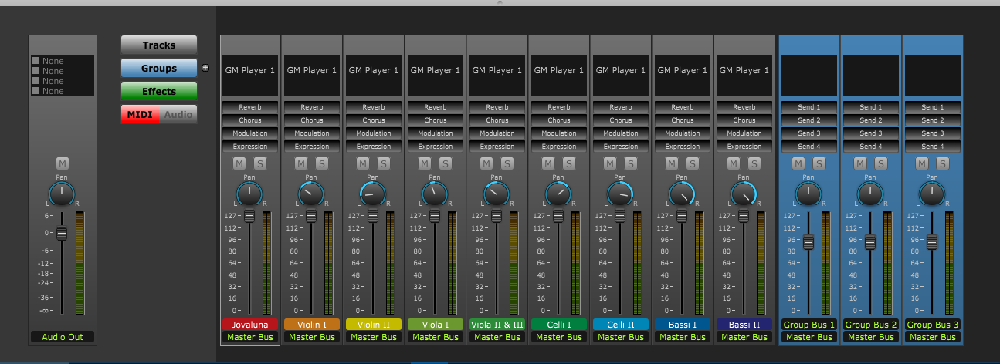
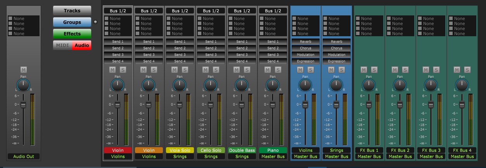

Mixer View
If the Mixer view is not showing click on the Mixer button at top left of Control Bar or type "Shift-M" to open the panel.
A mixing strip will appear at the bottom of your current view. The mixer contains a master channel strip and one channel strip for each track.
The Mixer is where you adjust volume, pan, and other channel strip settings.

MIDI Button - Click on the MIDI button to use the mixer as a MIDI mixer.
Usage - To set default MIDI Reverb, Chorus, Modulation, and Expression for a track, click and drag the appropriate slider. If you drag the slider all the way to the left, nothing will be sent.
Note: If is a good idea to always set and an initial volume and expression for each track.
The following sections are used when the MIDI button is enabled.
Group Channel Strips:
To show or hide all group channel strips click on the Groups button.
Groups strips are used to adjust the MIDI settings for a family of instruments.
This makes it easy to change for instance, the volume of all the strings.
To add a group strip, click on the Groups' plus button.
To send a track's output to a group, click on the track's output at the bottom of the strip.
Set the group channel strip MIDI settings just like the track channel strip.
Audio Button - Click on the Audio button to use the mixer as an audio mixer.
Note: The strips will only switch to audio settings if the corresponding track is using an VST/AU plugin.
Track channel strips Group channel strips Effect channel strips

The controls in audio channel strips control the track's audio signal not the MIDI settings.
The sections are described below:
Group Channel Strips:
To show or hide all group channel strips click on the Groups button.
Groups strips are used to adjust the settings for a family of instruments.
This makes it easy to change for instance, the volume of all the strings.
To add a group strip, click on the Groups' plus button.
To send a track's output to a group, click on the track's output at the bottom of the strip.
The effect channel strip are similar to the track channel strips
Effect Channel Strips:
To show or hide all effect channel strips click on the Effects button.
Effect strips are used to share VST/AU effects among several tracks. This is more efficient on your CPU usage.
This also makes it easy to change effects for multiple tracks in one place.
The effect channel strip are similar to the track channel strips, except there are no sends.